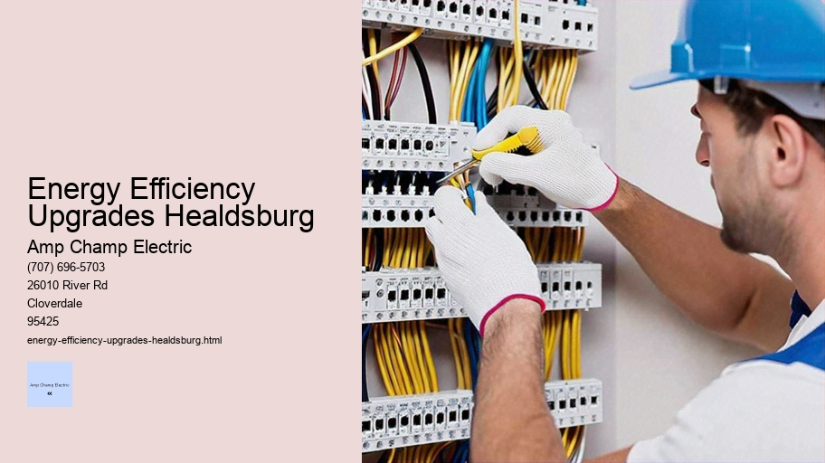

News
Electrical Installation Healdsburg
Electrical Installation Healdsburg
Electrical Installation Santa Rosa
Electrical Installation Cloverdale
Electrical Installation Geyserville
Electrical Installation Windsor
Maintenance and Repair Services Healdsburg
Maintenance and Repair Services Healdsburg
Maintenance and Repair Services Santa Rosa
Maintenance and Repair Services Cloverdale
Maintenance and Repair Services Geyserville
Maintenance and Repair Services Windsor
Electrical Safety Inspections Healdsburg
Electrical Safety Inspections Healdsburg
Electrical Safety Inspections Santa Rosa
Electrical Safety Inspections Cloverdale
Electrical Safety Inspections Geyserville
Electrical Safety Inspections Windsor
Energy Efficiency Upgrades Healdsburg
Energy Efficiency Upgrades Healdsburg
Energy Efficiency Upgrades Santa Rosa
Energy Efficiency Upgrades Cloverdale
Energy Efficiency Upgrades Geyserville
Energy Efficiency Upgrades Windsor
Specialty Electrical Services Healdsburg
Specialty Electrical Services Healdsburg
Specialty Electrical Services Santa Rosa
Specialty Electrical Services Cloverdale
Specialty Electrical Services Geyserville
Specialty Electrical Services Windsor
About Us
Contact Us

Energy Efficiency Upgrades Healdsburg
Home Electrical Safety Audit
Energy efficiency upgrades are a vital component in the quest for a more sustainable and environmentally conscious society. These improvements involve retrofitting or replacing existing systems with more efficient technologies that consume less energy to perform the same task or provide the same level of service.
One of the most compelling reasons for investing in energy efficiency upgrades is the significant financial savings they can offer over time. Although there might be an initial outlay, the reduction in energy bills can make these upgrades cost-effective in the long run. For homeowners, this could mean installing double-glazed windows, adding insulation to walls and attics, or upgrading to high-efficiency heating and cooling systems. For businesses, it could entail updating lighting fixtures to LED technology, optimizing manufacturing processes, or implementing advanced control systems for managing power consumption.
Beyond direct economic benefits, energy efficiency upgrades have profound environmental impacts. By reducing overall energy consumption, we decrease our reliance on fossil fuels—a primary source of greenhouse gas emissions contributing to global warming and climate change. This transition not only helps combat climate change but also results in improved air quality by minimizing pollutants released into the atmosphere.
Another advantage is increased comfort and health within living spaces and workplaces. Energy-efficient buildings often maintain more consistent temperatures and better air quality because they may include ventilation systems that remove contaminants from indoor air. Moreover, noise pollution from outside can be significantly reduced due to better insulation materials used during upgrades.
In addition to individual benefits, energy efficiency has macroeconomic advantages as well.
Commercial Electrical Services
It creates jobs in industries related to manufacturing and installing new technologies while fostering innovation as companies strive to develop even more efficient solutions.
However, despite these myriad benefits, some barriers exist that prevent wider adoption of energy efficiency measures—lack of awareness being one of them. Many people aren't informed about potential savings or don't understand how certain technologies work. Financial barriers also exist; although long-term savings are substantial, upfront costs can be a hurdle for many households and small businesses without access to capital or financing options.
To overcome these challenges, governments play a crucial role through policy-making and incentives such as tax credits, rebates for purchasing efficient appliances or renewable energy systems like solar panels—and regulatory standards that mandate certain levels of efficiency for buildings and appliances.
Community initiatives are equally important; local groups can provide education about the benefits of energy-efficient practices while helping residents navigate incentive programs offered by utilities companies or governments.
The future promises further advancements in technology that will continue pushing boundaries on what's possible with energy efficiency—from smart home ecosystems that manage power consumption dynamically based on usage patterns to breakthroughs in materials science leading to even better insulating properties.
In conclusion, embracing energy efficiency upgrades provides a wealth of opportunities—not just for individuals seeking lower utility bills—but also as part of our collective responsibility towards creating a healthier planet with sustainable resources for generations to come. It's an investment worth making today for securing a brighter tomorrow.
Title: The Bright Future of LED Lighting Upgrades and Retrofits
In the realm of artificial illumination, the advent of Light Emitting Diode (LED) technology has sparked a revolution that is as profound as it is luminous. As we journey towards a more energy-efficient world, LED lighting upgrades and retrofits stand out as pivotal steps in this transformative path. This essay delves into the benefits and considerations associated with upgrading to LED lighting, highlighting why this technological shift is not just a mere change in light fixtures but an investment in a sustainable future.
The Inception of Illumination Evolution:
For decades, incandescent bulbs reigned supreme in our homes and offices until Compact Fluorescent Lamps (CFLs) offered a more energy-saving alternative. However, these too had their drawbacks such as containing mercury, which posed environmental risks upon disposal. LEDs entered the scene with promises of unprecedented efficiency and longevity while minimizing ecological impacts—a promise they have kept admirably.
LEDs work by passing an electrical current through a semiconductor material which then emits light—a process far more efficient than heating a filament or relying on gas discharge methods used by traditional bulbs. This fundamental difference translates into lower electricity consumption and reduced heat production; two critical aspects in today’s energy-conscious society.
Economic Enlightenment:
One cannot discuss LED lighting upgrades without mentioning their economic advantages.
Home Theater Installation
Although initially more costly than conventional lighting options, LEDs offer substantial long-term savings due to their low power requirements and impressive lifespan that can span decades. The result is fewer replacements needed over time—translating into less maintenance costs—and diminished electric bills.
Environmental Radiance:
In an era where environmental conservation is paramount, embracing LEDs is tantamount to taking actionable steps towards reducing our carbon footprint. By using up to 80% less energy compared to traditional bulbs for the same level of brightness, LEDs contribute significantly towards efforts to combat climate change by diminishing greenhouse gas emissions from power plants.
Furthermore, unlike CFLs or fluorescent tubes, most LEDs do not contain toxic substances like mercury, making them safer for both human health and when it comes time for disposal or recycling.
Lighting Quality at Its Peak:
Beyond economics and environment lies another crucial facet—quality of light itself. LEDs excel here by offering superior color rendering indices (CRI), meaning objects under LED lights appear truer to their natural colors when compared against other artificial light sources.
Residential Electrical Services
Additionally, with advancements in technology allowing for dimmable options and different shades of white light (from warm yellowish hues to cool blue tones), customization possibilities are virtually endless enhancing both functionality and ambiance within spaces.
Retrofitting Realities:
Transitioning from old lighting systems to modern LED solutions often entails retrofitting existing fixtures—an approach generally more cost-effective than complete overhauls or new installations. Retrofit kits are designed to replace components like ballasts while maintaining original casings; thus facilitating easier adaptation especially in historic buildings where preserving aesthetic integrity is crucial.
However, successful retrofit projects require careful planning accounting for factors such as compatibility with existing fixtures, desired lighting levels across various areas (ambient vs task lighting), control systems integration for smart automation purposes among others—all ensuring seamless functionality post-upgrade.
Energy Efficiency Upgrades Healdsburg - Commercial Electrical Services
Programmable Logic Controllers (PLCs)
Schematic Wiring
Electrical Cost Estimation
Circuit Design and Analysis
The Social Spotlight:
Finally yet importantly comes social responsibility—the notion that businesses should lead by example when it comes adopting eco-friendly practices such as switching over entirely towards LED-based systems within their premises thereby showcasing commitment towards sustainability goals whilst potentially inspiring others within communities do likewise through visible demonstration tangible benefits derived from such initiatives.
Conclusion: A Luminous Leap Forward
As we advance further into the 21st century armed with better understanding implications our choices have on planet opting for LED lighting upgrades retrofits represents much more than superficial alterations—it embodies intelligent choice that aligns economic sensibility environmental stewardship quality living standards alike hence why this transition isn't merely encouraged but becoming increasingly imperative part global movement striving brighter cleaner future all inhabit.
electrical-installation-healdsburg.html
electrical-installation-santa-rosa.html
electrical-installation-cloverdale.html
electrical-installation-geyserville.html
electrical-installation-windsor.html
maintenance-and-repair-services-healdsburg.html
maintenance-and-repair-services-santa-rosa.html
maintenance-and-repair-services-cloverdale.html
maintenance-and-repair-services-geyserville.html
maintenance-and-repair-services-windsor.html
electrical-safety-inspections-healdsburg.html
electrical-safety-inspections-santa-rosa.html
electrical-safety-inspections-cloverdale.html
electrical-safety-inspections-geyserville.html
electrical-safety-inspections-windsor.html
energy-efficiency-upgrades-healdsburg.html
energy-efficiency-upgrades-santa-rosa.html
energy-efficiency-upgrades-cloverdale.html
energy-efficiency-upgrades-geyserville.html
energy-efficiency-upgrades-windsor.html
specialty-electrical-services-healdsburg.html
specialty-electrical-services-santa-rosa.html
specialty-electrical-services-cloverdale.html
specialty-electrical-services-geyserville.html
specialty-electrical-services-windsor.html
privacy-policy.html
sitemap.html
sitemap.xml
about-us.html
feed.xml
Energyefficient appliance installation
Energy-Efficient Appliance Installation: A Step Towards a Sustainable Future
In the modern world, where the echoes of environmental change are becoming louder, energy efficiency is not just a buzzword but an imperative practice. The installation of energy-efficient appliances in our homes and workplaces has emerged as a significant stride towards sustainability. This essay delves into why these installations are vital and how they contribute to a greener planet.
Firstly, let's address the importance of energy efficiency. Energy efficiency refers to using less energy to perform the same task – that is, eliminating energy waste. Energy-efficient appliance installation plays a crucial role in this by ensuring that devices such as refrigerators, air conditioners, washing machines, and others operate using minimal electricity without compromising on performance.
The benefits of installing energy-efficient appliances are multifaceted. At the forefront is the reduction in energy consumption which leads directly to lower utility bills. Households and businesses can save significantly on their monthly expenses by choosing appliances with high energy star ratings – a government-backed symbol for energy efficiency.
Moreover, these savings are not merely financial; they also translate into environmental conservation. By reducing power usage, we decrease the demand for electricity generation which often relies on burning fossil fuels. As a result, fewer greenhouse gases like carbon dioxide are emitted into the atmosphere – mitigating climate change and contributing to cleaner air quality.
Another advantage of embracing these appliances is their advanced technology and improved functionality. Manufacturers have innovated ways not only to make their products consume less power but also enhance user experience through better design and smarter features. For instance, many modern refrigerators circulate cool air more efficiently while keeping food fresher longer; washing machines use less water yet clean clothes more effectively due to sophisticated wash cycles.
However, transitioning from standard to high-efficiency appliances involves consideration beyond just purchasing them off the shelf; it requires thoughtful installation processes tailored for optimal performance. Proper appliance installation is pivotal because even an inherently efficient device can falter if installed incorrectly or unsuitably for its environment.
Professional installers assess various factors such as location within a space for maximum efficacy (e.g., placing a refrigerator away from heat sources), correct electrical requirements (to avoid potential overloads), and ensuring ventilation systems are unobstructed (for appliances like dryers).
Home Electrical Safety Audit
They also guide consumers on best practices for maintenance so that devices continue operating at peak efficiency levels throughout their lifespan.
Furthermore, old appliance disposal must be handled responsibly during new installations since discarding them improperly can lead to harmful substances leaking into ecosystems—another reason professional involvement becomes essential during this transition phase.
The journey towards total energy-efficient living extends beyond individual efforts—it requires collective action from manufacturers designing eco-friendlier products, governments providing incentives or rebates for green investments, retailers promoting sustainable choices among consumers, and each person making conscious decisions around household consumption patterns.
In conclusion, installing energy-efficient appliances is much more than an act of frugality—it's an investment in our planet's future health. It signifies our commitment to stewardship over resources entrusted to us and reflects a deep understanding that every watt saved constitutes a step closer towards ecological balance. Integrating these wonderous tools of technology within our daily lives allows us both economic benefits and peace of mind knowing we're partaking in crafting a cleaner world—one appliance at a time.
Smart home automation integration
Title: Embracing Convenience and Control: The Evolution of Smart Home Automation Integration
In the bustling era of technology, where convenience is king and the desire for seamless control over our environments has become a staple of modern living, smart home automation integration stands as a testament to human ingenuity. This essay delves into the transformative world of smart homes, exploring how integrated systems redefine our interactions with the spaces we inhabit.
The concept of a 'smart home' once conjured images from science fiction; now, it's an attainable reality. Smart home automation integration refers to the comprehensive ecosystem where various technological components work in unison to create an intelligent environment responsive to its inhabitants’ needs and preferences. From lighting that adjusts according to natural light levels and heating systems that learn your schedule to security cameras that can differentiate between familiar faces and strangers, this integration encompasses a myriad of functionalities designed to enhance comfort, energy efficiency, and security.
One might ask—how did we get here?
Energy Efficiency Upgrades Healdsburg - Schematic Wiring
Commercial Electrical Services
Voice, Data, and Video Wiring
Programmable Logic Controllers (PLCs)
Schematic Wiring
Electrical Cost Estimation
Circuit Design and Analysis
Home Theater Installation
The journey began with simple automated devices controlled by timers or basic sensors. As technologies advanced, so too did their capabilities. The advent of the internet gave rise to interconnectedness like never before, propelling us into the Internet of Things (IoT). Suddenly, devices could communicate not just with us but also with each other. A thermostat could talk to window blinds; lights could interact with alarm systems—all orchestrated through centralized platforms accessible via smartphones or voice commands.
Indeed, voice assistants have played a pivotal role in accelerating smart home adoption. Platforms like Amazon Alexa, Google Assistant, and Apple’s Siri have made interaction with smart devices more intuitive than ever. By simply speaking a command, users can adjust settings without lifting a finger—a boon for accessibility and ease-of-use.
But what truly makes these systems 'smart' isn't just their ability to follow orders—it's their capacity for learning and adapting. Machine learning algorithms allow devices within these integrated networks to analyze patterns in user behavior over time. In doing so, they anticipate needs rather than merely reacting to commands. Your coffee machine might start brewing at the precise moment you wake up based on your historical morning routine data.
Despite such conveniences and wonders afforded by these technologies, challenges persist—most notably in standardization and interoperability among different brands and platforms. A truly harmonious system requires components that speak the same language or at least understand each other through compatible protocols.
Furthermore, concerns regarding data privacy cannot be overstated in discussions about smart homes powered by AI-driven devices constantly collecting personal information about their users' habits and preferences. Ensuring robust cybersecurity measures are in place is paramount as homeowners entrust more aspects of their domestic life to interconnected technologies.
Looking towards the future brings excitement lined with cautious optimism as developers continue pushing boundaries while navigating ethical considerations intertwined with such deep technological integration into private domains. We envision advancements enhancing sustainability efforts through smarter energy management; personalized healthcare monitoring seamlessly incorporated into our daily lives; even greater cohesion between appliances fostering resource conservation—all achievable underpinned by responsible innovation practices prioritizing user safety above all else.
In conclusion, smart home automation integration represents both an apex of contemporary lifestyle enhancements—aspirations turned actualities—and an ongoing project requiring diligence in implementation amid rapid advancement cycles. As we further integrate technology into our homes transforming them into intelligent habitats responsive to our every need—we must balance this embrace of futuristic living with mindfulness about potential implications ensuring we mold technology around humanity's best interests rather than bending ourselves around it unwarily.
Solar panel system implementation
Solar Panel System Implementation: Harnessing the Power of the Sun
The sun, a colossal sphere of hot plasma, has been the lifeblood of our planet since its very inception. It is an unfathomable source of energy, one that humanity has sought to harness for centuries. In recent decades, we have made significant strides in capturing this celestial power through solar panel technology.
Energy Efficiency Upgrades Healdsburg - Schematic Wiring
Home Theater Installation
Residential Electrical Services
Harmonic Filtration
Power Distribution Units (PDUs)
The implementation of solar panel systems marks a pivotal transition towards cleaner and more sustainable energy sources.
Understanding Solar Panel Systems
To appreciate solar panel system implementation fully, we must first understand the fundamental components that make up these marvels of modern engineering. A typical solar panel system includes photovoltaic (PV) panels or modules, an inverter, a battery bank for storage (in off-grid or hybrid systems), mounting hardware, and various electrical accessories.
Programmable Logic Controllers (PLCs)
Photovoltaic panels are at the heart of the system; they convert sunlight into direct current (DC) electricity. This DC power then flows to an inverter that transforms it into alternating current (AC), which can be used by household appliances and fed into the power grid.
Planning and Designing
The journey towards implementing a solar panel system begins with careful planning and design. It involves assessing energy needs while considering factors such as roof space, orientation towards the sun, shading issues, local climate patterns, and legal regulations or incentives available for renewable energy installations.
A site audit is essential to determine the most suitable type of installation - whether rooftop-mounted systems on homes or businesses; ground-mounted arrays in open spaces; or even floating platforms on bodies of water for utility-scale operations. These assessments lead to customized designs that optimize efficiency while taking into account aesthetic concerns and physical limitations.
Installation Process
Once designed with precision, the next phase is installation—a critical process requiring skilled professionals who adhere strictly to safety standards and best practices. Mounting structures secure panels in place while ensuring adequate air flow behind them to prevent overheating. Electrical wiring demands meticulous attention to ensure both performance reliability and user safety.
In regions where net metering policies exist, connecting a solar setup to the public grid allows homeowners not only to draw power when needed but also sell excess production back; this requires additional regulatory compliance checks before activation can occur.
Benefits Beyond Energy Production
Implementing a solar panel system carries benefits far beyond mere electricity generation. By investing in renewable technologies like these we take concrete steps toward mitigating climate change—reducing our carbon footprint through decreased reliance on fossil fuels known for their greenhouse gas emissions.
Furthermore economic advantages emerge from creating green jobs within communities involved in manufacturing installing maintaining these systems as well as potential savings on electric bills over time due largely to reduced consumption from traditional grids especially given rising costs associated with non-renewable resources globally recognized today more than ever before due part thanks increased awareness surrounding environmental preservation efforts championed by governments organizations individuals alike all striving together toward brighter future powered sustainably courtesy our sun's boundless vigor shining down upon us day after day unabatedly generous indeed granting us opportunity seize hold destiny crafting world wherein harmony reigns supreme between mankind nature itself everlasting symbiosis borne out necessity yet flourishing love respect mutual dependency thus concluding saga human ingenuity meeting natural phenomena grand entwining heralded dawn new era energy abundance prosperity shared equally among all earth's inhabitants.
Energy Efficiency Upgrades Healdsburg - Schematic Wiring
Circuit Design and Analysis
Home Theater Installation
Residential Electrical Services
Harmonic Filtration
Electric vehicle EV charging station setup
The Emergence of Electric Vehicle (EV) Charging Stations: Paving the Way for a Sustainable Future
Energy Efficiency Upgrades Healdsburg - Circuit Design and Analysis
Electrical Cost Estimation
Circuit Design and Analysis
Home Theater Installation
Residential Electrical Services
Harmonic Filtration
In the midst of an epoch characterized by technological advancements and environmental awareness, the automotive industry is experiencing a monumental shift towards electric vehicles (EVs). This transformation is not only driven by growing concerns over climate change and the depletion of fossil fuels but also by the allure of innovation and efficiency that EVs offer. As we steer away from internal combustion engines, the need for robust infrastructure to support this new wave of transportation becomes paramount—chief among which is the establishment of EV charging stations.
The setup of EV charging stations is a critical component in fostering widespread adoption of electric vehicles. It involves meticulous planning, strategic placement, and incorporation of advanced technology, all designed to provide convenience and confidence to current and prospective EV owners. Below are key elements that encompass the setup process:
**Location Selection**
Choosing optimal locations for charging stations requires careful consideration. High-traffic areas such as shopping centers, parking lots, highways rest stops, and urban neighborhoods are prime candidates. Accessibility is crucial; therefore, proximity to main thoroughfares and existing amenities can enhance visibility and usage rates.
**Infrastructure Assessment**
Prior to installation, it’s necessary to evaluate local electrical infrastructures to ensure they can handle increased demand without compromising stability or safety. This may involve upgrading transformers or installing new ones, laying additional power lines, or integrating renewable energy sources like solar panels to offset power loads.
**Charging Station Types**
There are various types of charging stations ranging from Level 1 (standard 120V outlets), Level 2 (240V outlets), to DC fast chargers which drastically reduce charging times. The choice depends on location-specific needs; public spaces typically benefit from faster chargers due to higher turnover rates while residential areas may be adequately served by Level 2 chargers.
**User Experience Design**
Ease-of-use features such as intuitive interfaces, multiple payment options including contactless payments or smartphone apps, real-time availability status updates via online platforms contribute significantly towards user satisfaction. Clear signage indicating station locations within parking lots helps avoid confusion.
**Sustainability Considerations**
As part of our commitment towards an eco-friendly future, incorporating green practices into the design and operation of EV charging stations is fundamental. Utilizing energy-efficient lighting systems for visibility at night or harnessing renewable energy resources underscores this dedication.
**Regulatory Compliance**
Adhering strictly to regulatory standards ensures safety and reliability across all installations. Regular inspections should be maintained along with keeping abreast with changes in laws governing electrical systems associated with vehicle charging.
**Education & Awareness Programs**
Educational initiatives aimed at informing both potential consumers about benefits associated with driving EVs as well as businesses regarding potential economic advantages could stimulate interest in creating more opportunities for setting up additional infrastructure.
In conclusion, developing a networked ecosystem of EV charging stations is essential in supporting the transition towards cleaner modes of transport. It symbolizes not just an investment in modern infrastructure but also reflects collective responsibility towards preserving our environment for future generations. As we embrace these changes wholeheartedly – through strategic planning coupled with innovative thinking – we set forth on a journey that leads us closer towards achieving sustainable mobility solutions that harmonize with our planet's health.
Energy Efficiency Upgrades Santa Rosa
About
About Healdsburg
Check our other pages :
Electrical Installation Santa Rosa
Maintenance and Repair Services Healdsburg
Energy Efficiency Upgrades Healdsburg
Frequently Asked Questions
What specific energy efficiency upgrades can an electrician perform in my Healdsburg home or business?
An electrician can install LED lighting, smart thermostats, energy-efficient HVAC systems, solar panels, and upgrade your electrical system to handle more efficient appliances and reduce energy waste.
How much could I potentially save on my energy bills by making these upgrades?
Savings vary depending on the extent of the upgrades. LED lighting can save about 75% in lighting costs, while smart thermostats can save around 10-12% on heating and 15% on cooling expenses. Overall, you could see a significant reduction in your bills over time.
Are there any rebates or incentives available for making energy efficiency upgrades in Healdsburg?
Yes, local utilities often offer rebates for certain energy efficiency improvements. Additionally, federal tax credits may be available for things like solar panel installations. It’s best to consult with your electrician and research current incentives at the city and state level.
How do I know if my electrical system needs an upgrade to support new energy-efficient appliances or systems?
An inspection by a licensed electrician will reveal if your current system is adequate. Signs that you might need an upgrade include frequent breaker trips, flickering lights when using appliances, or if your electrical panel is old and outdated.
Can an electrician help me assess which energy efficiency upgrades would provide the greatest benefit for my property?
Yes, a professional electrician can conduct an energy audit of your property to identify areas where improvements can be made. Theyll give recommendations based on factors like your current energy consumption patterns and potential savings from various upgrades.
Energy Efficiency Upgrades Healdsburg